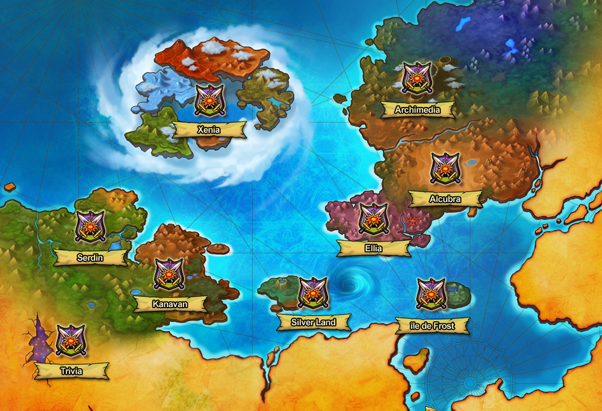
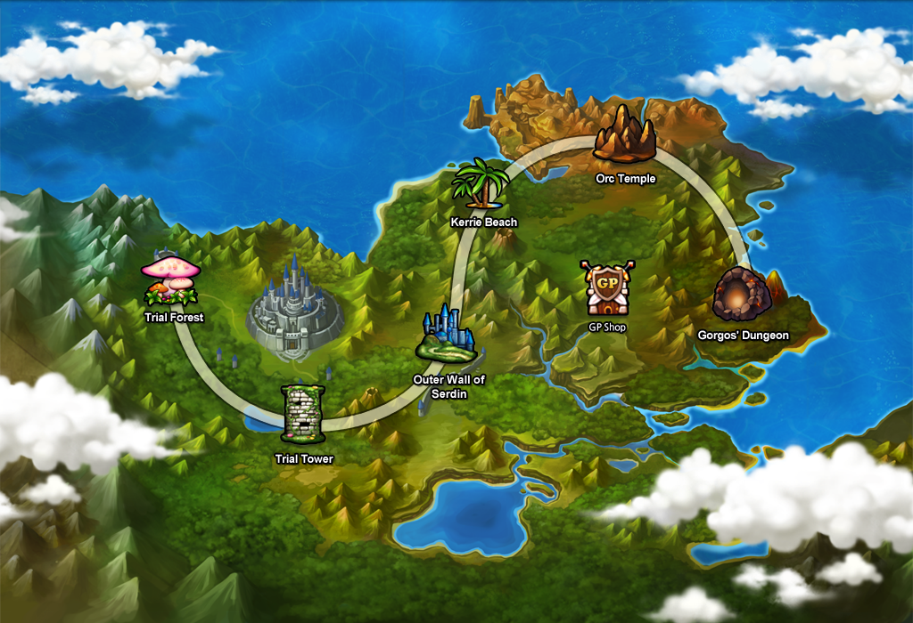
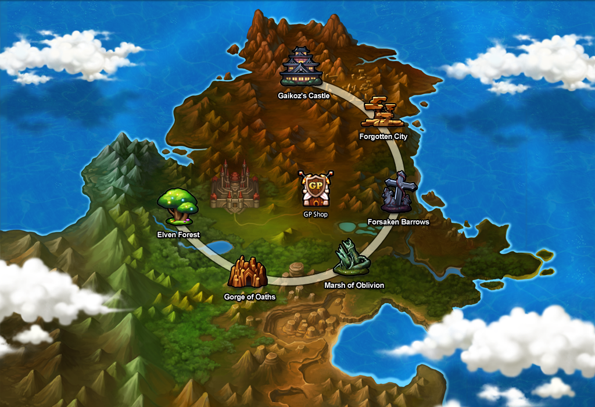

Bermesiah is one of two continents in the world of Aernas, the other being Ellia. It is also the first continent players start out on. A portal leading from Trivia opens in an uncharted area of the Bermesiah continent.

History
Bermesiah houses two known kingdoms, Serdin and Kanavan, as well as the hidden island of Eryuell, where the elves live. Serdin and Kanavan coexisted together peacefully until one day, when the Queen of Darkness, Kaze'aze, began her attempt to conquer the land.
Kaze'aze began the long war between Serdin and Kanavan in Kanavan, when she killed the Queen of Kanavan's most trusted advisor. Disguised herself as him, she enticed the Queen with darkness. Blinded from the truth the Queen declared war on Serdin, a war which lasted for five years until the Queen of Serdin sacrificed herself in hopes of ending the war.
Upon her death, Kaze'aze's hold over Kanavan's Queen broke and she fled before she could be executed. The Queen of Kanavan sent out Trackers to search for Kaze'aze, but after years of searching, with the Trackers disappearing and no signs of Kaze'aze to be had, the search was given up.
Meanwhile, a new Queen was appointed. After the war had ended, and Kaze'aze's plot and trickery revealed, the new Queen was determined to prevent Kaze'aze from starting another war between the kingdoms. She then organized the creation of an elite group of warriors who would fight for all of Bermesiah, attracting talents from all over the continent to form the group that would be known as the "Grand Chase".
Regions
Serdin is one of two kingdoms that rule on Bermesiah. It is known as the Kingdom of Magic, hosting the Violet Mage Guild who specializes in such abilities. Serdin is ruled by a Queen, with no mention of a King, suggesting that Serdin is ruled by a monarchy.

Kanavan is one of two kingdoms that rule on Bermesiah. It is the kingdom of swordsmanship and many phenomenal swordsmen, such as Elesis, Ronan, Elscud and Sieghart all hail from Kanavan. There are four known organizations within Kanavan: the Kanavan Royal Guard, the Ruby Knights, the Kanavan Trackers, and the Existor. Kanavan is ruled by a Queen, with no mentions of a King, suggesting that Kanavan is ruled by a monarchy.

Eryuell Island is the island home of the elves. The elves that lived on the island were originally pacifistic and avoided all human conflict until they decided to help them. At first, the island was a hiding spot for elves when the Serdin/Kanavan war occured. After the five years, some elves left to support the humans in the future uprisings. The only known organization within Eryuell Island is the Elven Corps.